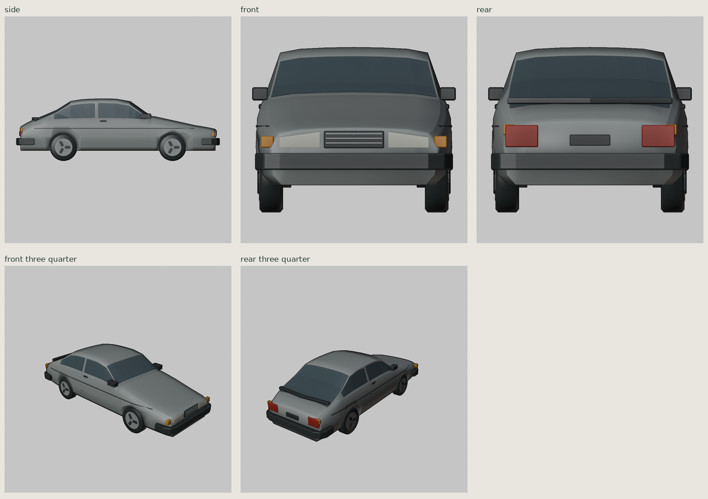
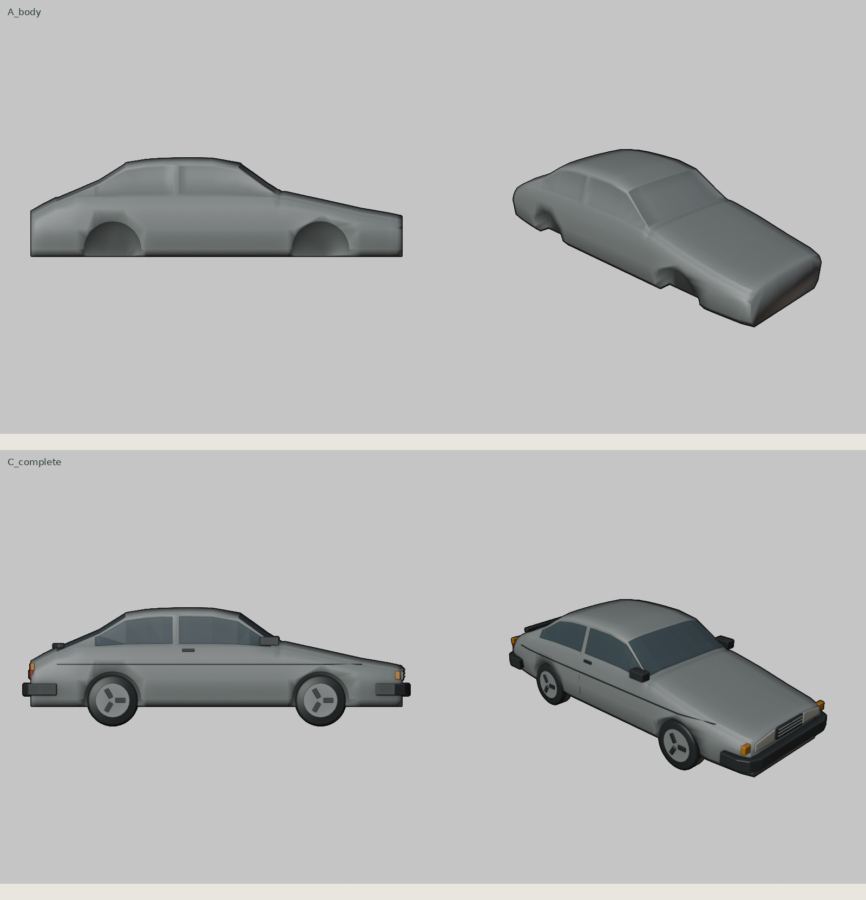
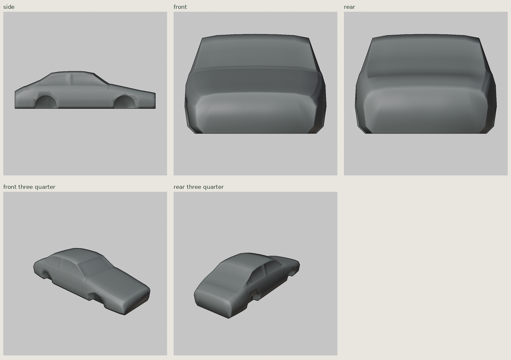
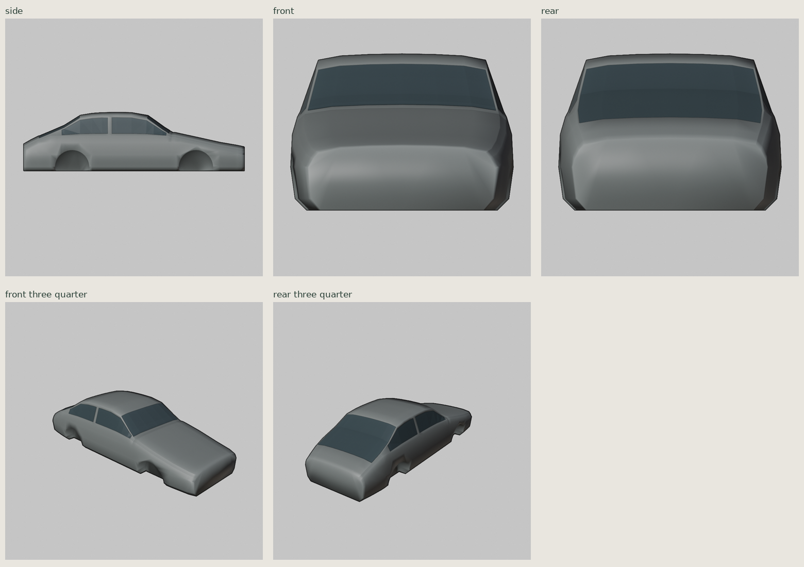
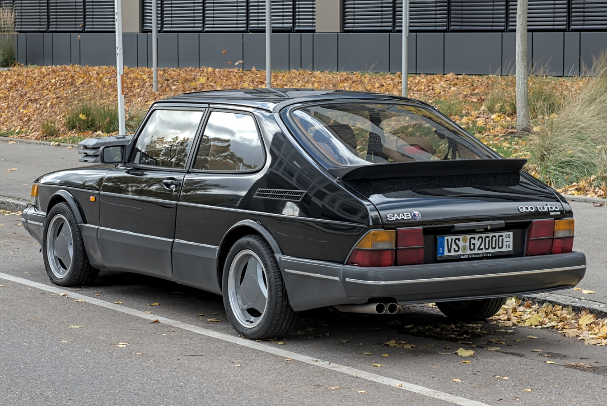

Saab 900 Turbo 16 · Classic, tredörrars, cirka 1988
Komplett stiliserad modell, byggd och granskad i Blender i Codex. Egen Saab-kaross med lång huv, välvd vindruta, smal kupé och sluttande halvkombilucka. Samma kameror, ljus och skala i granskningsstegen.
4,680 × 1,690 × 1,420 m; hjulbas 2,517 m. 7 822 trianglar, 8 material, 47 meshobjekt, GLB i originalskala. Geometrikontroll och återimport passerar. Kvar: förenklade lampkonturer, facetter i glaset, mjuk skärm-skuggning och approximativa dekor-/fälgdetaljer. Ingen spelintegration eller verifierad iPad-FPS.
Fem slutliga kameravyer

Grundkaross jämfört med komplett bil

A – siluett och grundkaross

B – kaross, glas och stolpar

Referensbilder
Alexander Migl / Wikimedia Commons, CC BY-SA 4.0. Resizerade kopior. Perspektivbilder, inte kalibrerade ortografiska ritningar. Exakt årsmodell i fotografierna är inte verifierad.
